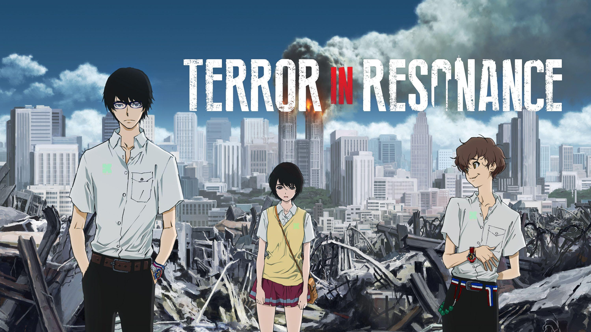
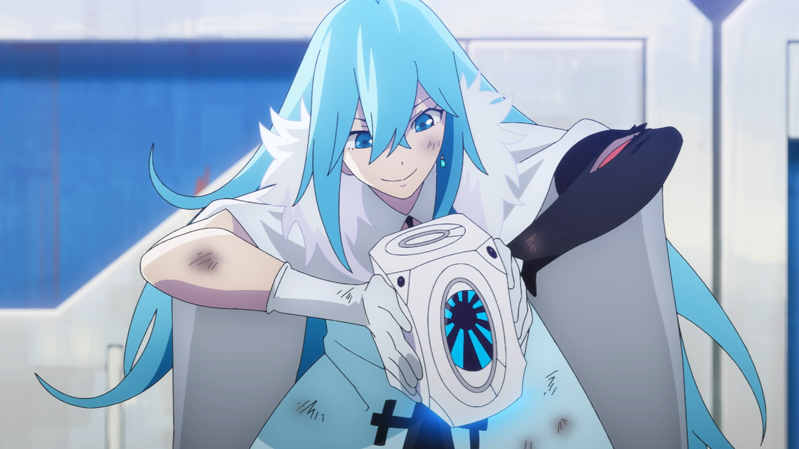
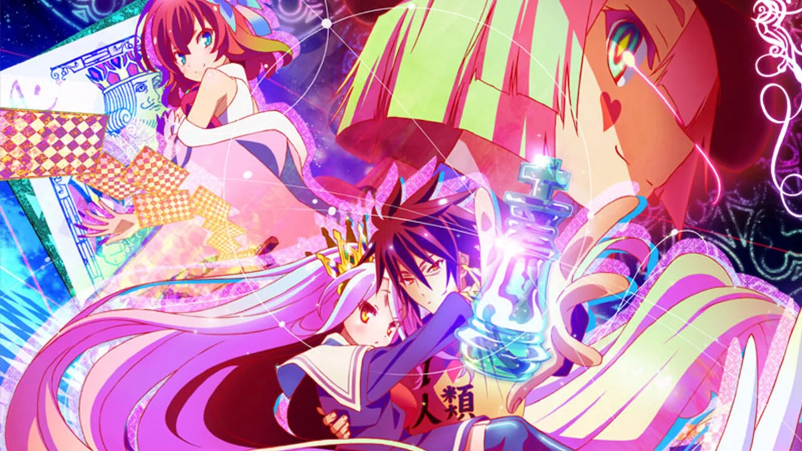
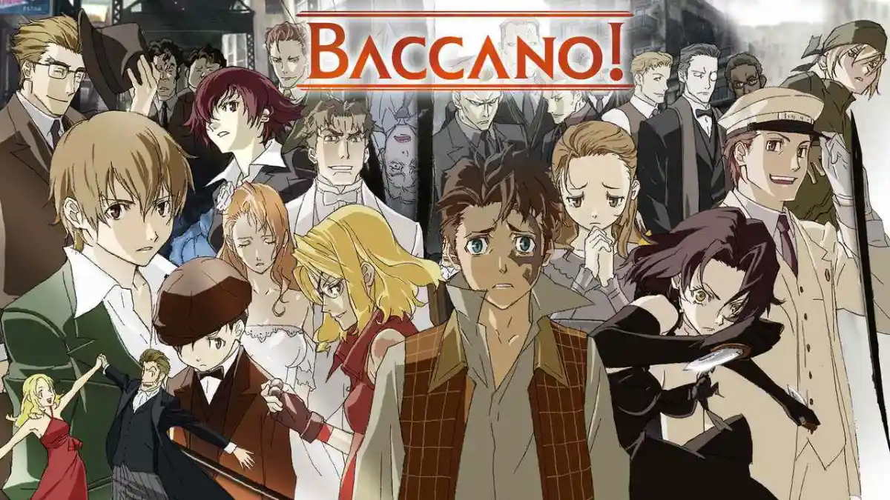
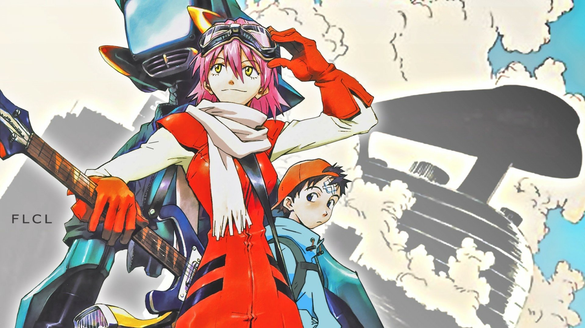
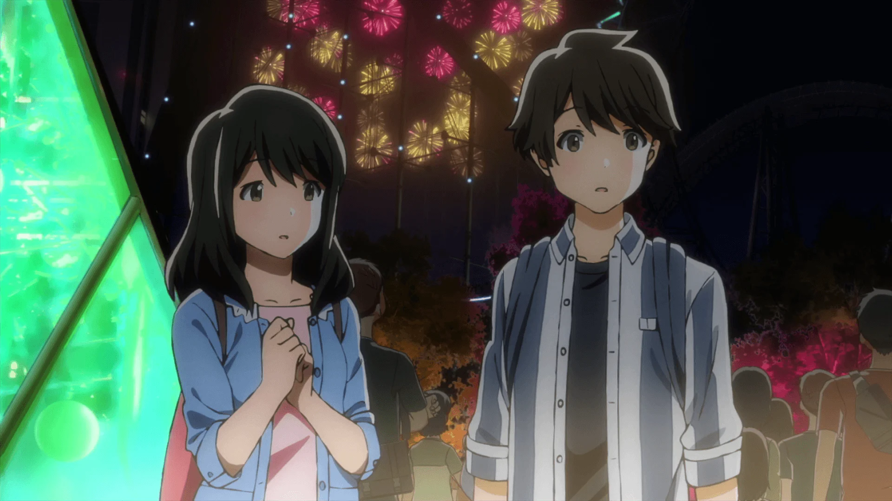
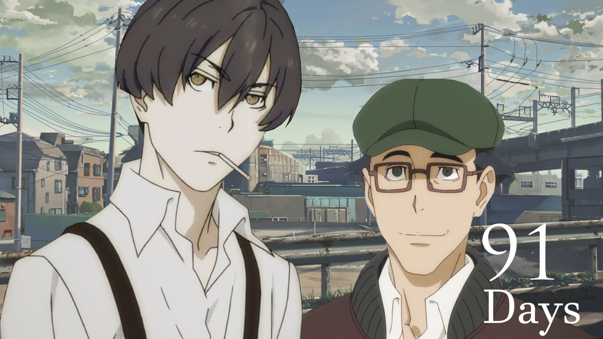
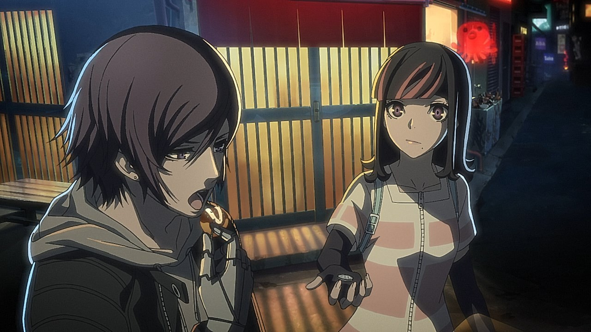

SMASH Senpai
Top 10 12-Episode Anime You Can Finish in a Weekend
Not everyone wants a 100+ episode commitment. Sometimes you just want a complete anime story — short, focused, and powerful. No fillers. No dragging. Just pure impact.
This list is for people who want anime you can actually finish. Every entry here is a 12-episode anime with a complete story, designed to be binged in one or two sittings.
Whether you’re burned out on long-running series or just looking for something tight and unforgettable, these anime prove you don’t need hundreds of episodes to leave a lasting impression.
These are the Top 10 12-Episode Anime you can finish in a weekend — and still think about long after the credits roll.
Sponsored
#1 Cyberpunk: Edgerunners

Cyberpunk: Edgerunners is the perfect example of how a short anime can deliver a complete, emotionally devastating story without wasting a single episode. Set in the brutal world of Night City, the anime tells a fast-paced, character-driven story where ambition, survival, and identity collide.
What makes Edgerunners ideal for a weekend binge is its relentless pacing. The anime wastes no time on filler or exposition-heavy episodes. Every moment pushes the story forward, developing characters through action, loss, and hard choices. The world feels alive, dangerous, and unforgiving — a place where dreams are expensive and failure is fatal.
Despite its explosive action and striking visuals, the true strength of Edgerunners lies in its emotional core. As the story progresses, success never feels permanent. Victories come with consequences, and each episode chips away at the illusion that things will somehow work out in the end.
In just 10 episodes, Cyberpunk: Edgerunners delivers a complete rise-and-fall narrative that feels raw, intense, and unforgettable. It proves that a short anime doesn’t need multiple seasons to leave a lasting impact — it just needs confidence and clarity.
- Episode count: 10
- Genre: Action, Sci-Fi, Psychological
- Best for: Fast binge, emotional impact, modern anime fans
- Why it works: Complete story with no filler

play anime smash or pass here (not sponsored)
SMASH SENPAI – Smash or Pass#2 Terror in Resonance
Terror in Resonance is a tightly written psychological thriller that proves how powerful a 12-episode anime can be when every detail is intentional. From the opening episode, the series establishes a tense atmosphere built on mystery, symbolism, and emotional restraint.
Rather than relying on constant action, the anime focuses on slow-burning tension. Each episode reveals small pieces of a larger puzzle, encouraging viewers to pay attention to dialogue, music, and visual cues. This measured approach makes the story feel grounded and unsettling, even during moments of silence.
What truly sets Terror in Resonance apart is its emotional weight. Beneath the surface-level mystery lies a story about trauma, isolation, and the consequences of systems that discard people without accountability. The characters are not driven by chaos for the sake of spectacle, but by deeply personal motivations rooted in pain and neglect.
With only 11 episodes, the anime delivers a complete and focused narrative. There is no padding, no unnecessary detours, and no unresolved threads. Terror in Resonance is best experienced in a short binge, where its mood, themes, and haunting soundtrack can fully sink in.
- Episode count: 11
- Genre: Psychological, Thriller, Drama
- Best for: Mature viewers, slow-burn tension
- Why it works: Focused storytelling with emotional depth
Sponsored
#3 Vivy: Fluorite Eye’s Song
Vivy: Fluorite Eye’s Song is a rare short anime that blends science fiction, action, and emotion into a tightly structured, fully complete story. Spanning just 13 episodes, the anime follows Vivy, an AI tasked with preventing a future where artificial intelligence wipes out humanity.
What makes Vivy stand out is its episodic structure combined with a long-term goal. Each arc feels like its own mini-story, yet everything connects toward a clear conclusion. This makes the anime incredibly satisfying to binge, as every episode feels meaningful rather than transitional.
Beyond the sci-fi elements, Vivy explores identity, purpose, and emotional growth. The anime asks what it truly means to “fulfill a mission” and whether logic alone is enough to guide moral decisions. These themes are handled subtly, without heavy exposition or unnecessary dialogue.
With high-quality animation, a strong soundtrack, and a conclusive ending, Vivy is ideal for viewers who want a deep, polished anime experience without committing to multiple seasons.
- Episode count: 13
- Genre: Sci-Fi, Action, Drama
- Best for: Thought-provoking binge watches
- Why it works: Complete story with no loose ends
#4 No Game No Life
No Game No Life is one of the most iconic short anime series built around intelligence, strategy, and overpowered main characters. In just 12 episodes, it introduces a colorful fantasy world where every conflict is settled through games rather than violence.
The anime’s biggest strength is its pacing. Episodes move quickly from setup to payoff, keeping viewers engaged without dragging out conflicts. Each game introduces new rules, twists, and mind games that reward attention rather than brute force.
Sora and Shiro’s dynamic adds a unique layer to the story, balancing humor, confidence, and psychological manipulation. Their victories feel earned, not because they are stronger, but because they understand the system better than anyone else.
Despite its unfinished status, No Game No Life remains a highly bingeable short anime. It delivers a satisfying experience within its 12 episodes and continues to attract viewers searching for clever, fast-paced storytelling.
- Episode count: 12
- Genre: Fantasy, Strategy, Comedy
- Best for: Smart protagonists and mind games
- Why it works: High-energy episodes with strong hooks
Sponsored
#5 A Place Further Than the Universe
A Place Further Than the Universe is a powerful reminder that a short anime doesn’t need extreme action or tragedy to leave a lasting impact. In 13 episodes, it tells a heartfelt story about youth, ambition, and the courage to take the first step into the unknown.
The anime focuses on four girls brought together by the shared desire to do something meaningful with their lives. Rather than rushing character development, the story allows emotions to build naturally through everyday struggles and honest conversations.
What makes this anime especially binge-worthy is its balance of optimism and realism. The characters grow not through sudden revelations, but through persistence, failure, and mutual support. Each episode adds emotional weight without feeling repetitive.
By the end of its run, the anime delivers a complete and satisfying conclusion that feels earned. It’s an excellent choice for viewers looking for something inspirational without committing to a long series.
- Episode count: 13
- Genre: Slice of Life, Adventure, Drama
- Best for: Emotional and motivational watches
- Why it works: Natural character growth and closure
#6 Baccano!
Baccano! is a high-energy, non-linear anime that rewards attentive viewers. Told across multiple timelines, the series weaves together crime, immortality, and chaos into a tightly packed 13-episode experience.
Rather than following a single protagonist, Baccano! introduces a wide cast of characters whose stories intersect in unexpected ways. This structure keeps every episode engaging, as seemingly unrelated events slowly form a cohesive narrative.
Despite its complexity, the anime never feels confusing for long. Each episode adds clarity, encouraging viewers to continue watching to uncover how everything connects. This makes it particularly binge-friendly, as watching episodes back-to-back enhances understanding and enjoyment.
With sharp dialogue, memorable characters, and a definitive ending, Baccano! proves that experimental storytelling can thrive in a short format.
- Episode count: 13
- Genre: Action, Supernatural, Crime
- Best for: Non-linear storytelling fans
- Why it works: Interconnected narrative with strong payoff
Sponsored
#7 FLCL
FLCL is one of the shortest anime experiences that still manages to feel emotionally complete. With only six episodes, it delivers a chaotic, symbolic coming-of-age story packed with energy and creativity.
On the surface, FLCL appears absurd and unpredictable. However, beneath its exaggerated visuals and humor lies a surprisingly grounded exploration of adolescence, confusion, and emotional growth.
The anime thrives on its fast pacing and refusal to explain everything. Instead of holding the viewer’s hand, FLCL invites interpretation, making it a unique binge that feels different with every rewatch.
Its short length makes it perfect for viewers looking for something bold and unconventional without a long time commitment.
- Episode count: 6
- Genre: Experimental, Comedy, Drama
- Best for: Unique anime experiences
- Why it works: Short, impactful, and unforgettable
#8 Tsuki ga Kirei
Tsuki ga Kirei is a romance anime that stands out by doing less, not more. In just 12 episodes, it tells a grounded and realistic story about first love, social anxiety, and emotional awkwardness that feels painfully authentic.
Unlike many romance anime that rely on exaggerated drama or constant misunderstandings, Tsuki ga Kirei focuses on subtle moments. Text messages, quiet walks home, and uncomfortable silences carry more weight than dramatic confessions. This restrained approach makes the story feel personal and relatable.
The characters behave like real teenagers, unsure of themselves and afraid of saying the wrong thing. Their emotional growth happens slowly, shaped by distance, responsibility, and the fear of change that comes with growing up.
With a complete ending and no unnecessary padding, Tsuki ga Kirei is ideal for viewers who want a short, emotionally honest anime that feels sincere from start to finish.
- Episode count: 12
- Genre: Romance, Slice of Life
- Best for: Realistic and quiet storytelling
- Why it works: Subtle emotions and complete ending
#9 91 Days
91 Days is a tightly written revenge anime that wastes no time and pulls no punches. Set during the Prohibition era, the story follows a young man who infiltrates a mafia family to destroy it from the inside.
What makes 91 Days so effective is its focus on consequences. Every decision pushes the story closer to an inevitable conclusion, and there are no power-ups, miracles, or last-minute escapes. The anime treats revenge as something destructive rather than empowering.
The pacing is sharp and deliberate. Each episode deepens relationships, blurs moral lines, and raises emotional stakes. As bonds form between characters on opposing sides, the tension becomes increasingly painful to watch.
With only 12 episodes, 91 Days delivers a complete and emotionally heavy narrative that feels mature and unforgettable. It’s perfect for viewers looking for a serious, grounded anime with a definitive ending.
- Episode count: 12
- Genre: Drama, Crime, Revenge
- Best for: Mature and tragic storytelling
- Why it works: No filler, no mercy, full closure
#10 Akudama Drive
Akudama Drive is a fast-paced cyberpunk anime that thrives on chaos, style, and escalating stakes. In just 12 episodes, it tells a complete story about criminals, identity, and the cost of rebellion in a corrupt system.
The anime wastes no time establishing its world. Neon cities, brutal law enforcement, and morally gray characters create an atmosphere where survival depends on adaptability rather than heroism.
What makes Akudama Drive especially bingeable is how quickly situations spiral. Each episode raises the stakes, pushing characters into irreversible decisions that permanently change the direction of the story.
Despite its explosive action and stylized violence, the anime delivers a surprisingly complete conclusion. Akudama Drive ends with purpose, making it an excellent final entry for a short-anime list that values closure over endless sequels.
- Episode count: 12
- Genre: Action, Cyberpunk, Sci-Fi
- Best for: High-energy binge watching
- Why it works: Stylish chaos with a definitive ending